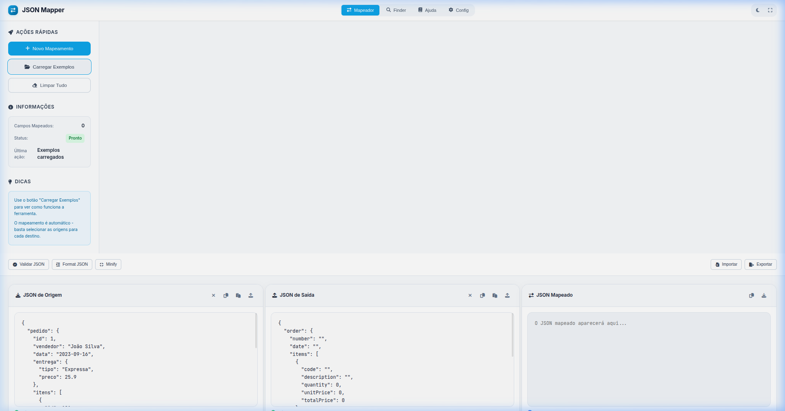
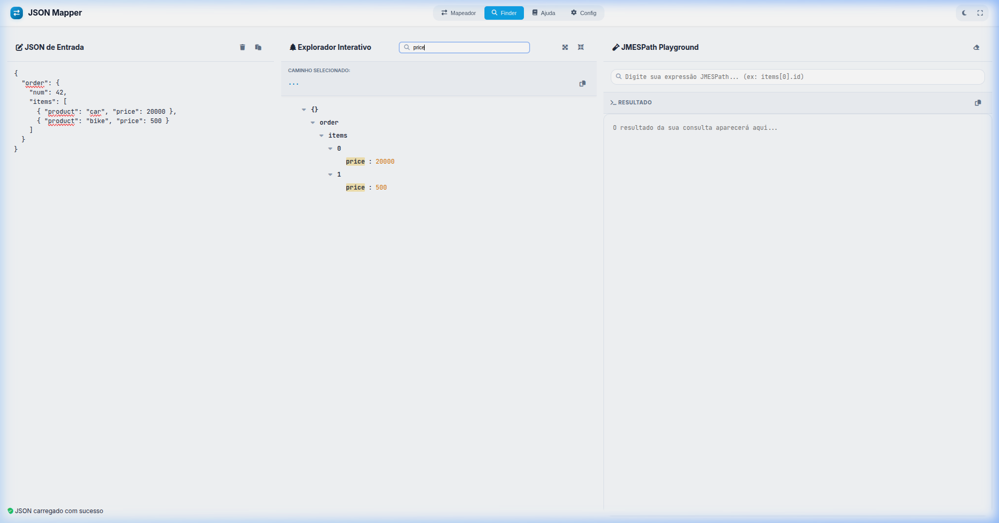
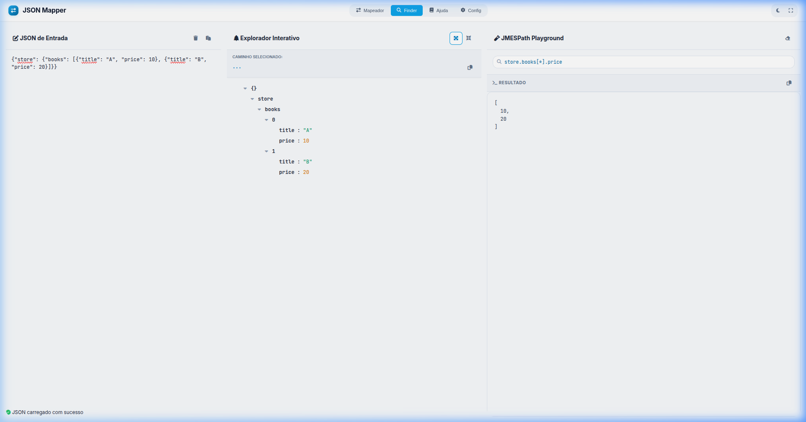
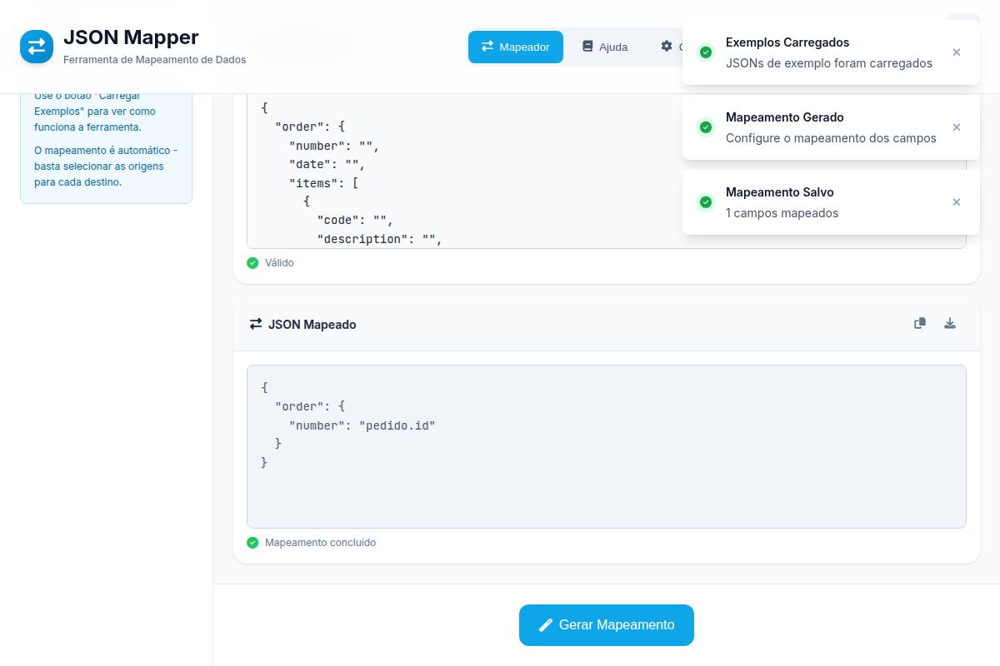

Cole um JSON à esquerda para visualizar a estrutura
JMESPath Playground
Resultado
Central de Ajuda & Manual
1. Visão Geral
O JSON Mapper é uma ferramenta profissional para transformar dados JSON
usando JMESPath. A interface é organizada em painéis sincronizados e
editores com suporte a Drag & Drop.

2. JSON Finder & Busca
Use a aba Finder para explorar visualmente seu JSON. A barra de busca
permite filtrar campos instantaneamente com realce de termos.

3. JMESPath Playground
Na terceira coluna do Finder, você pode testar expressões JMESPath complexas e ver o
resultado em tempo real antes de aplicar ao mapeamento.

4. Fluxo de Mapeamento
Clique em Gerar Mapeamento no painel principal. Selecione a origem para
cada campo de destino e visualize o resultado final no painel Mapeado.

Configurar Mapeamento
Tutorial JMESPath
Aprenda a dominar JMESPath com exemplos interativos e explicações detalhadas
1
Básico
2
Filtros
3
Projeções
4
Funções
5
Avançado
Fundamentos do JMESPath
JMESPath é uma linguagem de consulta para JSON que permite extrair e transformar dados de forma poderosa e elegante.
O que é JMESPath?
JMESPath (JSON Matching Expression Path) é uma linguagem que permite:
Extrair dados específicos de estruturas JSON complexas
Parabéns! Você completou o tutorial básico do JMESPath. Aqui estão algumas sugestões para continuar aprendendo:
Documentação Oficial
Consulte a documentação completa do JMESPath para todos os detalhes.
Playground
Pratique com diferentes dados e cenários no playground interativo.
Casos Reais
Apply JMESPath em projetos reais para solidificar seu conhecimento.
Comunidade
Participe de fóruns e comunidades para aprender com outros usuários.
Dica Final
A prática leva à perfeição! Comece com consultas simples e gradualmente aumente a complexidade. O JSON Mapper é uma ótima ferramenta para testar suas expressões JMESPath.